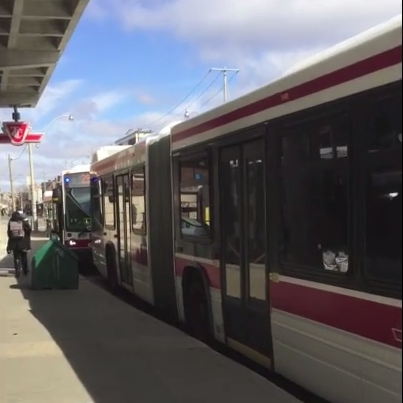
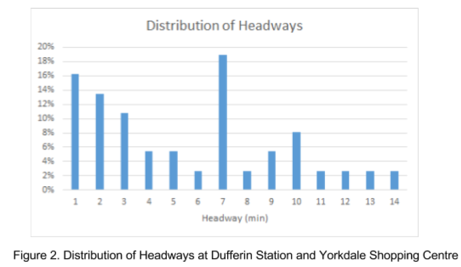
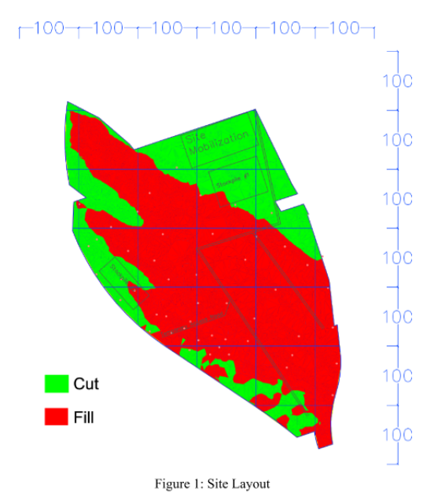
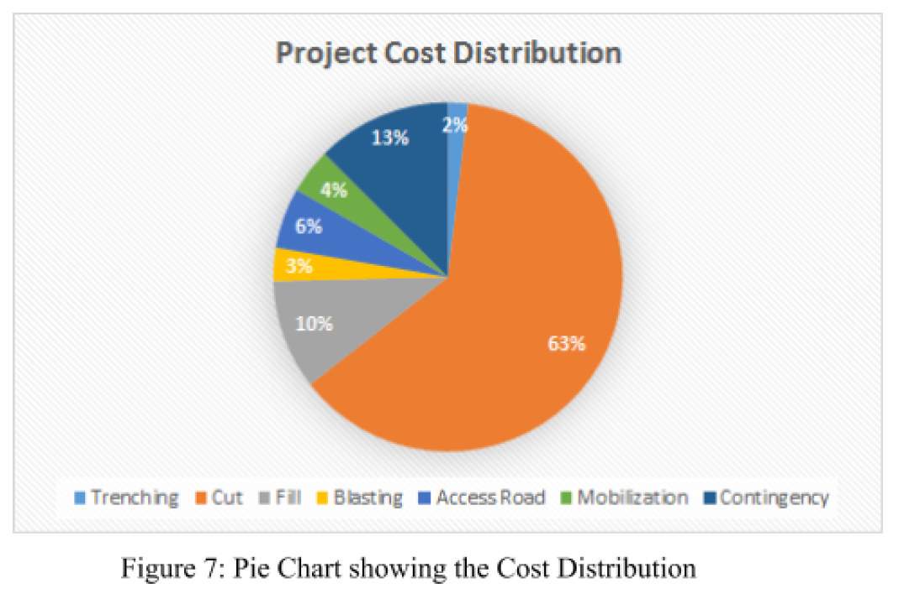
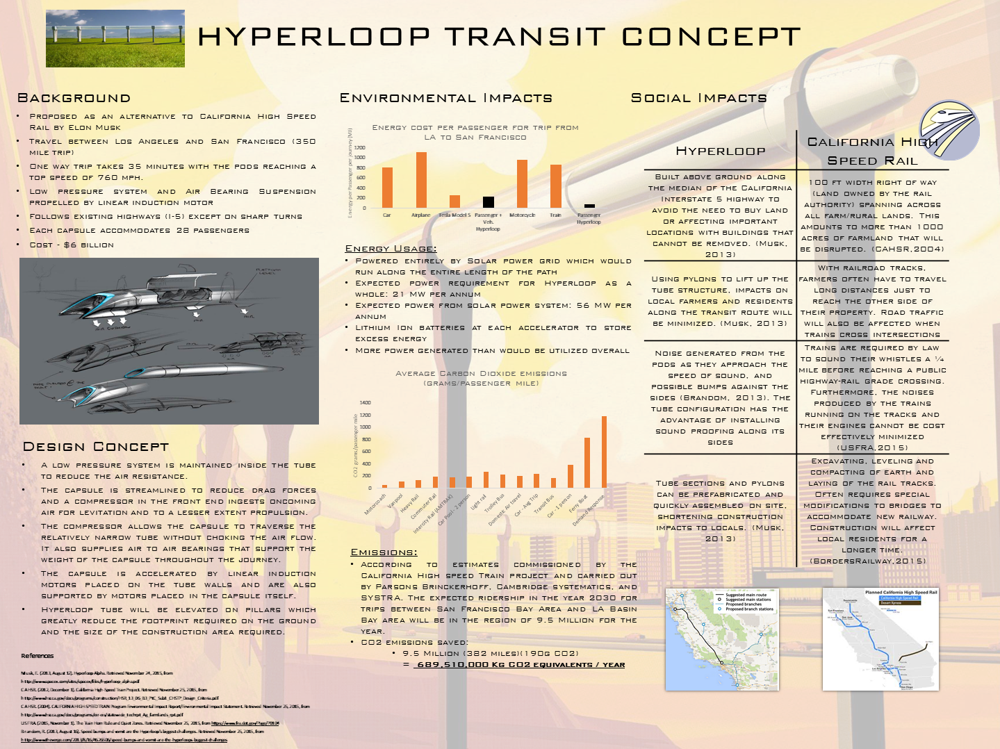

"The group used two
methods of data collection for analysis purposes: on-site data collection and online database
searching. The team determined that the main problems on Dufferin are bus bunching,
inconsistent head way and crowding."

Bus bunching at Dufferin Station

Final Recommendation:"After careful analysis and
review of different case studies, the group decided to utilize a combined system of PoP
payment, all-door boarding, prediction algorithm and bus lane that will effectively mitigate the
issue based on research."
Construction Engineering Earthworks project

Site layout and cut and fill calculated using Civil 3D

Project Cost distribution
Capstone Project: Business case for CRH Canada on Alternative fuel for Cement Production
Professional poster on the Hyperloop transit concept

Hyperloop poster (made by Akash Elango, Andy Poon, Jonathan Lopez, Bruce Li)
Construction Management Project: Union Station Platform Construction